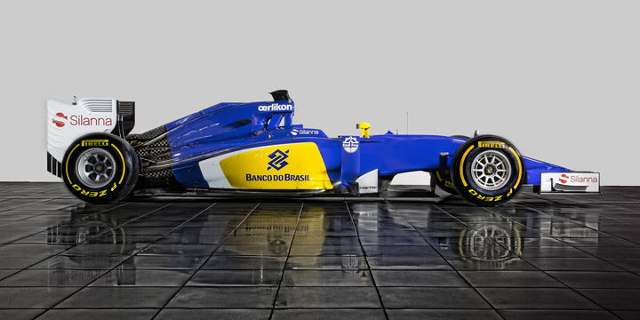

Sauber

Switch to Renault power dramatically boosts competitiveness, with Pastor Maldonado taking Williams' first win since 2004 in Spain, but both drivers' form proves inconsistent and team rank seventh overall going into summer break.
Team
Full Team Name: Sauber C34-Ferrari Team
Base: Maranello, Grove, UK
Team Principal: Marcus Ericsson
Technical Chief: Sauber
Driver: P Maldonado
Driver: B Senna
Chassis: Carbon Fibre Monocoque
Engine: Ferrari 1600 cc V6 turbo
Tyres: Pirelli P Zero
First Season: 1996
World Championships: 9
Highest Race Finish: 1 (x86)
Pole Positions: 132
Terug naar de hoofdpagina